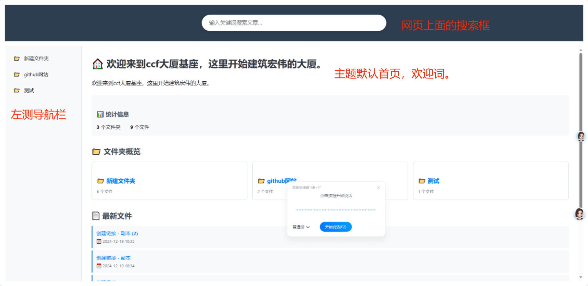

📂 github网站
📄 文件列表
📄
首先，这是要把自己的想法，自己的思路文章要语言大模型进行总结，我要git根据我的计划提出构想指定思路以及具体的复习方案全部给到我，我在自己通过个人的大脑进行思考，选择最适合我的方案。
要自己了解整个内容的框架做思维导图要根据问gpt的内容来分析指导，两者是相互结合的。
首先呢，我就把我想要的东西给给他，让他来选择。
经过思维导图，把这些文字具象化思路整理化，信息化之后。
 我还要把我想要的效果全部写上去，也就是最终他能给我实现什么效果，到时候这个项目完成之后，我要11对比，能不能完成完成的效果。也要采用第一性原则，开始之初就要根据我想要的效果设计出来，达到我想要的结果。
我还要把我想要的效果全部写上去，也就是最终他能给我实现什么效果，到时候这个项目完成之后，我要11对比，能不能完成完成的效果。也要采用第一性原则，开始之初就要根据我想要的效果设计出来，达到我想要的结果。
开始进入施工环节。
首先就要先用工具准备好要AI编程工具
 ，AI语言大模型，时刻运用思维导图，还有OneNnte。
我采用ai的方式是这样子的：如果是一些指令比较简单的命令，我会采取一个免费ai来运行。如果是一些复杂的代码编写，我会采用一个付费的功能性强的AI来编写运行。最终实现一个效率以及运行的费用一个平衡点，达到小满。
，AI语言大模型，时刻运用思维导图，还有OneNnte。
我采用ai的方式是这样子的：如果是一些指令比较简单的命令，我会采取一个免费ai来运行。如果是一些复杂的代码编写，我会采用一个付费的功能性强的AI来编写运行。最终实现一个效率以及运行的费用一个平衡点，达到小满。
测试